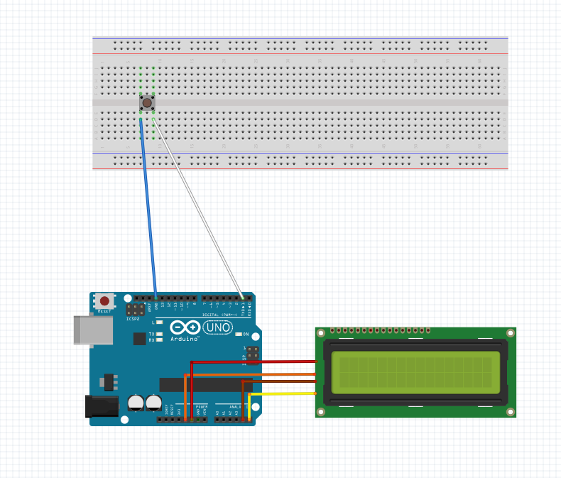
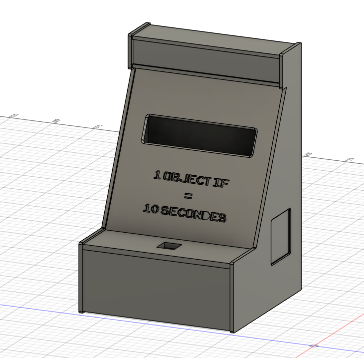
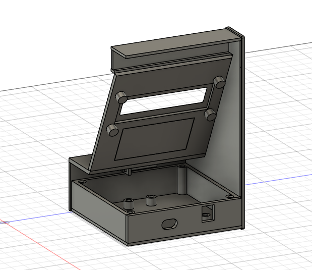
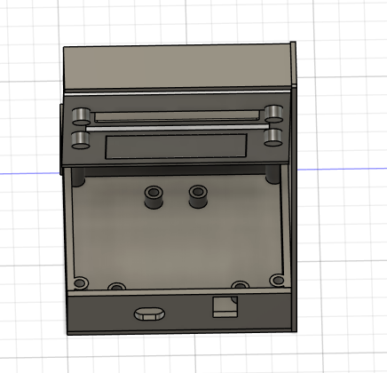
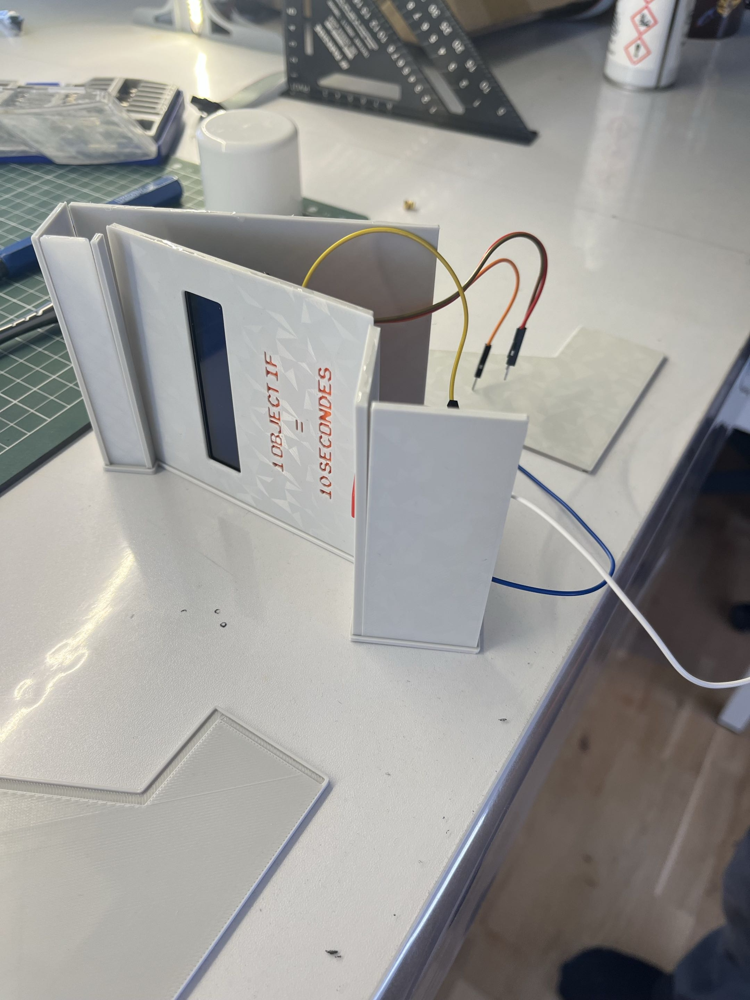
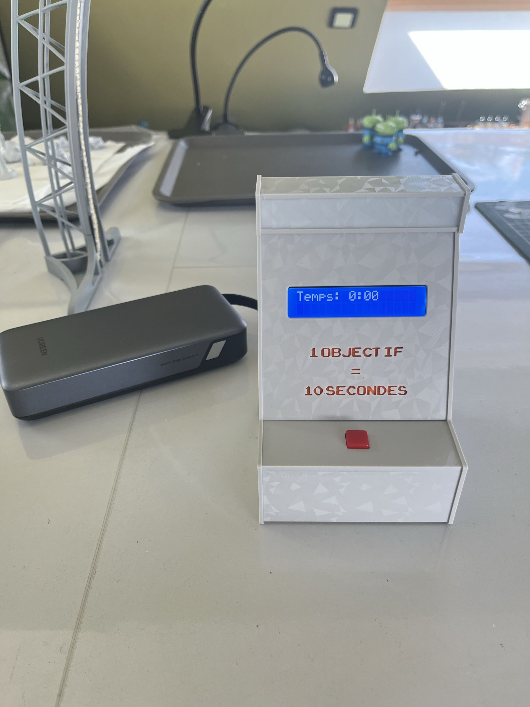

Projet Arduino + Impression 3D
Ce projet consiste à concevoir un jeu basé sur un système Arduino permettant de mesurer la précision du joueur sur une durée donnée.
L’objectif est de concevoir un dispositif simple et interactif dans lequel le joueur doit arrêter un chronomètre à un temps précis, ici 10 secondes, à l’aide d’un bouton et d'un écran LCD.
Le but du joueur est d’arrêter le chronomètre le plus proche possible de 10 secondes.
Le matériel pour le montage de la partie Arduino est la suivante :
| Composant | Quantité |
|---|---|
| Carte arduino uno | 1 |
| Ecran LCD 2x16 | 1 |
| Bouton poussoir | 1 |
| Câbles | 6 |

Schéma fait à partir de fritzing.
#include <LiquidCrystal_I2C.h>
const int bouton = 1;
LiquidCrystal_I2C ecran(0x27, 20, 4);
unsigned long tempsDepart = 0;
unsigned long tempsEcoule = 0;
bool chronoEnCours = false;
bool etatBoutonPrecedent = HIGH;
bool jeuDemarre = false;
// Pour l'alternance d'affichage
unsigned long dernierChangement = 0;
bool afficherTemps = false;
void setup() {
ecran.init();
ecran.backlight();
pinMode(bouton, INPUT_PULLUP);
// Message initial
ecran.setCursor(0, 0);
ecran.print("Appuie pour");
ecran.setCursor(0, 1);
ecran.print("jouer");
}
void loop() {
bool etatBouton = digitalRead(bouton);
// alternance visuel
if (!jeuDemarre) {
if (millis() - dernierChangement > 3000) {
afficherTemps = !afficherTemps;
dernierChangement = millis();
ecran.clear();
if (afficherTemps) {
ecran.setCursor(0, 0);
ecran.print("Temps: 0:00");
} else {
ecran.setCursor(0, 0);
ecran.print("Appuie pour");
ecran.setCursor(0, 1);
ecran.print("jouer");
}
}
}
// detection appui
if (etatBoutonPrecedent == HIGH && etatBouton == LOW) {
// 1e clic = démarrage
if (!jeuDemarre) {
jeuDemarre = true;
chronoEnCours = true;
tempsDepart = millis();
ecran.clear();
}
// 2e clic = arrêt
else if (chronoEnCours) {
tempsEcoule = millis() - tempsDepart;
chronoEnCours = false;
ecran.clear();
ecran.setCursor(0, 0);
ecran.print("Temps: ");
ecran.print(tempsEcoule / 1000.0);
ecran.setCursor(0, 1);
if ((tempsEcoule / 10) == 1000) {
ecran.print("VICTOIRE !");
} else {
ecran.print("PERDU !");
}
}
// 3e clic = reset
else {
jeuDemarre = false;
ecran.clear();
}
delay(200);
}
etatBoutonPrecedent = etatBouton;
// affichage du chrono
if (chronoEnCours) {
tempsEcoule = millis() - tempsDepart;
ecran.setCursor(0, 0);
ecran.print("Temps: ");
ecran.print(tempsEcoule / 1000.0);
}
}
Afin de compléter ce projet et de le rendre plus esthétique et plus pratique à utiliser, j'ai réaliser une coque faites en impression 3D
Le boîtier a été modélisé à l’aide du logiciel Fusion360. Plusieurs contraintes devaient être prises en compte :
Voici quelques captures d'écran de la modélisation 3D sur logiciel :



Les cylindres visibles permettent de visser les éléments à la structure pour que les élements pour être sur que rien ne bougent.
Le Bloc du bas acceuil la carte Arduino.
J’ai également soudé le bouton poussoir afin de gagner en place et de rendre plus pratique son installation.
Une fois la modélisation terminée, le fichier 3D a été exporté puis préparé pour l’impression. L’impression a été réalisée en plastique PLA.
Chaque pièce s'emboitent et ont toutes étaient collé à la colle forte pour être sur du maintien de la structure.
Grâce à l’impression 3D, le projet possède désormais une structure plus propre et plus solide. Le boîtier permet de mieux présenter le jeu et facilite son utilisation. Cette partie du projet m’a permis de découvrir les bases de la modélisation et de mieux comprendre le fonctionnement de l’impression 3D.


Ce projet m’a permis de travailler, d’apprendre, d’approfondir et de développer des connaissances dans différentes compétences.
Tout d’abord, il m’a permis de continuer à me former à l’utilisation d’Arduino après quelques petits exercices personnels. De plus, j’ai pu mettre en œuvre de manière autonome mes connaissances acquises en HTML et en CSS ainsi qu'en développer des nouvelles.
Enfin, j'ai appris des petites bases en JavaScript avec ma petite simulation présente dans la partie cahier des charges.
J’ai également appris à mieux maîtriser les outils Git et GitHub.
Enfin, concernant la partie impression 3D, j’ai découvert, avec l’aide de proches, un domaine que je ne connaissais jusque-là que de loin, et qui s’est révélé passionnant. J’ai ainsi pu apprendre de nombreuses choses, notamment la modélisation.
Plusieurs choses peuvent être ajouté ou changé au projet.
Tout d'abord, sur le côté GamePlay,pour rendre le jeu plus fun et plus compétitif, on pourrait faire jouer un deuxième joueur juste après le premier et le joueur le plus proche du temps demandé gagne.
Ensuite, il serait possible d’augmenter la difficulté du jeu. Plutôt que de viser uniquement 10 secondes, le système pourrait générer des valeurs aléatoires, comme 8,3 secondes ou 6,7 secondes. Cela rendrait le jeu plus imprévisible et demanderait davantage de précision de la part du joueur.